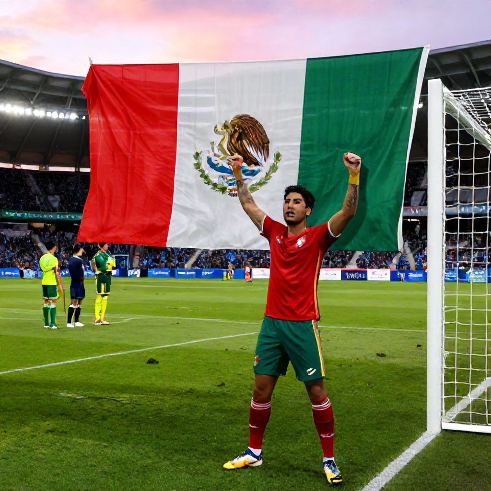

Opening Match Sets Stage for Potential Showdown
Mexico begins its 2026 FIFA World Cup campaign against South Africa on Thursday, June 11, 2026, at 9 PM ET. With the tournament’s first match already set, the stage is set for what could be an important early test for both teams.
As favorites in their opening fixtures, Mexico and Argentina are expected to dominate their respective group stages. However, the path to a potential knockout clash between these two powerhouse Latin American sides remains uncertain.
Mexico vs South Africa: A Favorable Start
According to Sports Select odds, Mexico is listed at -333 to win outright against South Africa, while South Africa sits at +600. This massive favorite line reflects Mexico’s perceived strength and experience in major tournaments. Meanwhile, the over/under for the match is set at 2 goals, indicating a likely low-scoring affair.
Mexico's opening fixture provides a crucial opportunity to establish dominance early in the competition. With a strong squad built around seasoned veterans and emerging talent, Mexico has the tools to secure a comfortable victory.
Betting Takeaway: Mexico -333
For those looking to back a winner in the opening match, Mexico represents the safest bet. Despite being heavy favorites, the margin of victory is not guaranteed. However, with South Africa listed at +600, the risk-reward ratio favors backing the Mexican side.
Even if Mexico wins by a narrow margin, the moneyline payout of -333 ensures a solid return. Given the disparity in odds, this is a low-risk play that aligns with the overall expectation of Mexico’s performance in the group stage.
Looking Ahead: Argentina’s Path to a Showdown
While Mexico takes on South Africa first, Argentina will face Algeria on Monday, June 15. Though both teams are strong contenders, the focus remains on the potential matchup between Mexico and Argentina later in the tournament.
If both teams advance past the group stage, a quarterfinal clash would be one of the most anticipated matches in the tournament. Until then, the spotlight remains on Mexico’s ability to start strong and build momentum ahead of future challenges.
Conclusion
Mexico’s World Cup opener against South Africa offers a clear betting opportunity. With a significant edge in form and talent, Mexico is positioned to take control early. For fans and bettors alike, backing Mexico at -333 provides a solid foundation for a successful World Cup run.
As the tournament progresses, the possibility of a Mexico vs Argentina showdown looms large. But for now, the priority is securing a strong start — and Mexico appears well-equipped to deliver.